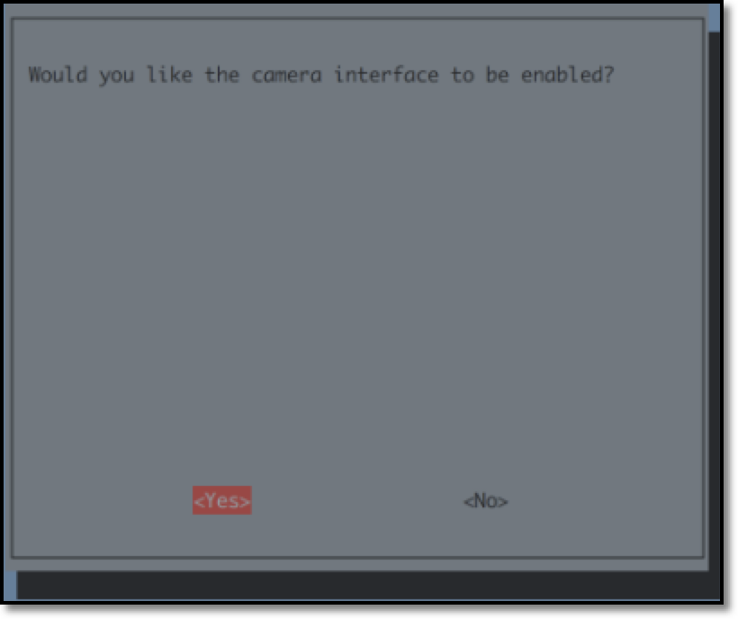
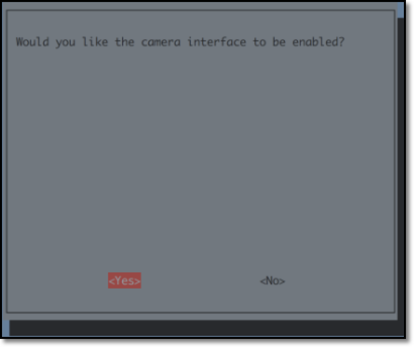

SDカードイメージを最初から作成する方法
インストール済みイメージを使う場合は、本作業をスキップ
DonkeyCarインストール済みイメージを使う場合は、1.車体作成にお進みください。
| 作成済みイメージ |
|---|
| DonkeyCar 3.1.5 |
本章では、上記のイメージを作成するためのインストール手順を解説しています。
Raspberry Piのイメージ
Raspberry Pi用のイメージは、Raspberry Pi Imagerを使って直接micro SDカードに焼き込みます。
イメージの焼き込みに使えるツールは
Raspberry Pi Imagerの他にも、balenaEtcherやDDコマンドなどでも焼き込み可能です。
使用中のOS(Windows/maxOS/Ubuntuに対応)のRaspberry Pi Imagerをダウンロードし、インストールします。
Raspberry pi Imagerを使ってmicro SDカードにOSイメージを焼きます。OSはRaspberry Pi OS Lite (32-bit)を選択します。


sshの有効化
RaspberryPi OSの焼き込みが終わったら、sshの設定をおこないます。

OSイメージをmicro SDカードに焼き込み終わったあとに、SDカードを抜いて、再度PCに挿し直すと、PCでSDカードが認識されます。PCでSDカードを認識したら、bootパーティション直下に空ファイルのsshファイルをコピーします。
ssh
をダウンロードし、SDカードにコピーします。sshファイルの中身はただの空ファイルですが、sshという名前のファイルがSDカードに存在すると、sshでのアクセスが可能になる設定になります。
この方法での結果、raspi-configでsshを有効化すること同じ結果になります。
RasberryPiにキーボードやマウスが装着されていない時に有効
上記方法では、PCでsshの設定ができますので、RaspberryPiにキーボードやマウスが装着されていない時でも、sshでの接続を可能な設定に変更する事が可能です。
WiFiの設定
micro SDカードに、wpa_supplicant.confファイルをコピーします。
wpa_supplicant.conf
をダウンロードします。ファイルを編集してSSIDとパスワードをWiFiルータ用に設定してください。
wpa_supplicant.confを編集したら、SDカードのbootパーティション直下にコピーしてください。
この後、SDカードをraspberry piに入れて、raspberry piの電源を入れます。
Raspberry Piのアップデート
Raspberry Piにログインしてパッケージを更新します。
1 2 | |
Rapberry Piの設定
以下のコマンドで、I2Cとカメラを有効化します。
Interfacing Options -> Camera -> yes , Interfacing Options -> I2C -> yes を選択すると有効化できます
1 | |

 



tabキーを押し、finishボタンを押すことで設定出来ます。
raspi-config自体もアップデート可能な事があるので、raspi-configを更新しておきたい場合はraspi-configのメニューからアップデートの確認をおこなってください。
設定を変更すると再起動するので、再度SSHでログインします。
HDMI HotPlug 有効化
Raspberry Pi起動後にHDMIケーブルを繋いだときに、モニターに画面を表示するための設定。
デフォルトだと電源を入れる前にHDMIケーブルを接続していなければモニターを認識しないので、この設定をしておくと便利になります。
1 | |
1 2 | |
vimでコピー&ペーストを可能にする
1 | |
1 | |
Hostnameの修正
Defaultでは、Macユーザは ssh pi@raspberrypi.local でRaspberry Piに接続できます。全員同じ名前になると、区別がつかないので、hostname, hosts の 2箇所のhost名を書き直し、独自の名前で呼び出せるようにしておきます。今回は、raspberrypiからdonkeypiに書き直します。
hostnameの修正
1 | |
1 | |
hostsの修正
1 | |
1 2 3 4 5 6 7 8 | |
DonkeyCarのインストール
パッケージ群のインストール
1 2 3 4 5 | |
virtualenv環境の構築
python/pip環境をpython3/pip3で構築します。
この仮想環境は~/env/に作成されます。
source ~/env/bin/activateコマンドで仮想環境を有効化して、deactivateコマンドで仮想環境を抜けます。
pip仮想環境を削除する場合はrm -rf ~/envでディレクトリを削除することで可能です。
1 2 3 | |
上記コマンドでログインシェルのbash設定ファイルである~/.bashrcファイルに仮想環境を有効化するように追記したため、ログインすると自動的にこの環境を使用する設定にしています。
deactivateを実行すれば元のpythonの環境に戻せます。
DonkeyCarのインストール
参考: DonkeyCar公式ページ
最新のDonkeyCarをインストールします。
困ったら公式サイトをみるようにします。
ここではpip install opencv-pythonとして、OpenCV最新版をビルドしてインストールしているのですが、Raspberry Pi3B+で3時間くらいかかるので、sudo apt-get install python3-opencvでインストール出来る場合はそちらでもいいと思います。
1 2 3 4 5 6 7 8 9 10 11 | |
OpenCV 4.xは以下のエラーが出る場合があります。
1 2 3 4 5 6 | |
これはOpenCVの問題のようなので、問題が解決されるまで以下のように対応しておきます。
1 2 | |
参考：https://github.com/piwheels/packages/issues/59
DonkeyCar 設定
まずは~/mycarを作成して、自分の車両用の設定ファイルをテンプレートから作成します。
1 2 | |
次に、myconfig.pyを編集します。
1 | |
ステアリングPWMとスロットルPWMはキャリブレーションを実施して適切な値を入れます。
JOYSTICK_DEADZONEはスロットルオフの時にレコーディングが止まるように少しあった方がいいようです。
(元々のDonkeyCar設計はスロットルオフの時にレコーディングが止まる設計なのですが、ジョイスチックの値が少しブレてしまうようで、無視する範囲がデフォルトの0.0だとスロットルオフの時もレコーディングが止まらなくなってしまうようです。）
1 2 3 4 5 6 7 8 9 10 11 12 13 14 15 16 | |
OLED設定
新しいDonkeyBoardにはOLEDが搭載されています。
Raspberry Piを起動したときに、IPアドレスを表示することが可能になるため、その設定をおこないます。
また、DonkeyCarもOLEDを利用できますが、ネットワークインターフェースが存在しない場合（Raspberry Pi3A+）にエラーになります。
ネットワークインターフェースの確認を追加したコードをpull requestしてあるので、将来的には解決すると思いますが、今の所は対策済みのoled.pyをdonkeycarのソースコードにコピーしておくことにします。
参考：https://github.com/FaBoPlatform/ip_address_display
ダウンロードと設定
1 2 3 4 5 6 | |
/etc/rc.local編集
exit 0の前にOLEDを表示するスクリプトの実行を追加します。
1 | |
1 2 3 4 5 | |
rc.local有効化
1 2 3 4 | |
再起動後、ネットワークに接続されていればOLEDにIPアドレスが表示されます。
1 | |